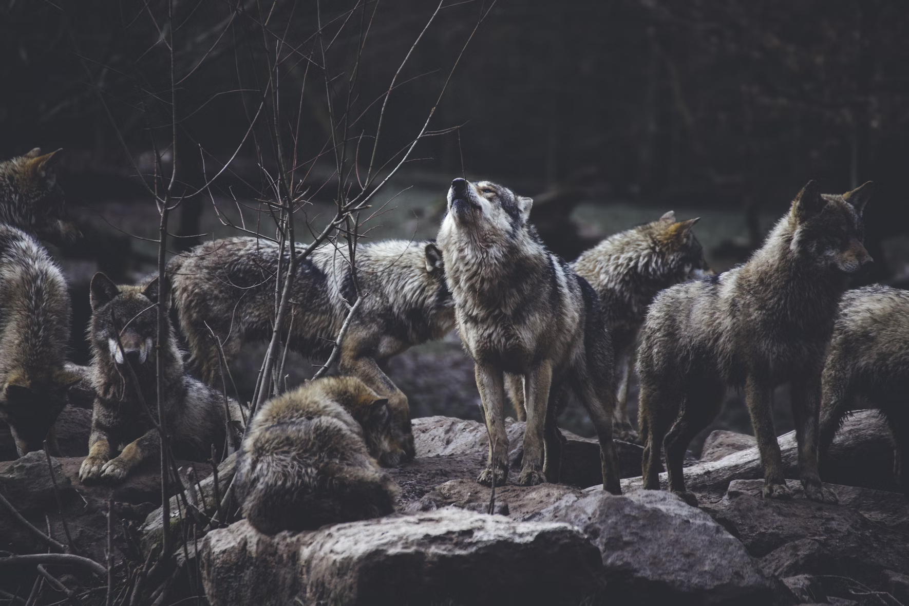
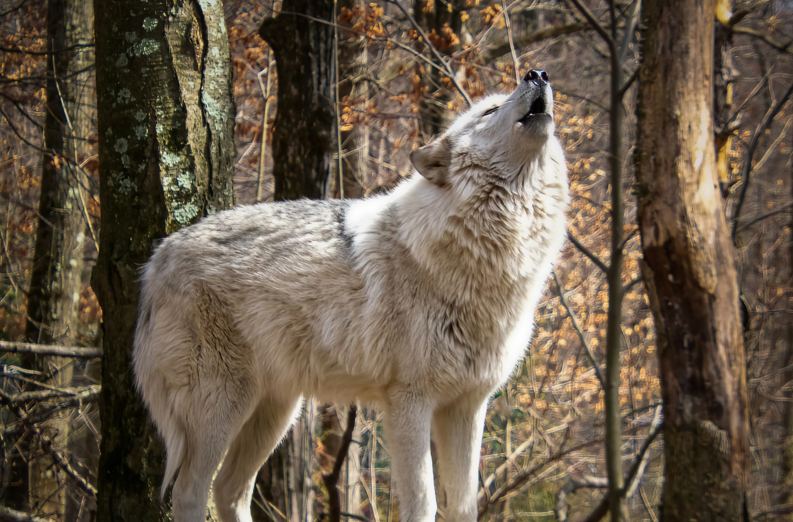

Social Structure
Wolf Pack

By Thomas Bonometti - unsplash
Gray wolves usually live in packs that consist of 6 to 10 family members. A pack is led by a dominant female and male who typically are the parents of most of the pack members. Other younger or inexperienced members are subordinate to the dominant pair.
In a wolf pack, only the dominant pair can give birth to cubs, but other subordinate members also take care of the cubs together, including providing food and guarding the den site. These subordinative members are not only crucial for increasing the survival rate of cubs, but also play an important role in hunting and defending territory.
If leaders die, the pack will break up or accept other wolves from different families. If a young wolf wants to become a leader, it will leave its original pack and build its pack.
Although scientists used to believe that the dominant pair aggressively dominates other members, they now find that the dominant pair maintains its status through its reproductive roles and parental authority, rather than aggression. To be more specific, during breeding seasons, the dominant female and male coordinate their respective leadership roles and take priority in different situations based on their own experience and advantages, making crucial decisions for the pack such as when and where to hunt.
Communication

By Stephen Crane - unsplash
Wolves use various ways to communicate
Vocalizations: Wolves use howls to assemble the pack (usually before and after hunts), pass on an alarm (particularly at a den site), locate lost companions, and communicate across great distances. Besides, they also growl, bark, and whine.
Body postures: Aggressive or self-assertive wolves are usually characterized by holding a high body posture and raised hackles. On the other hand, submissive ones stay in a low body position, flattening their fur and lowering their ears and tail.
Scent marking: Among all scent marks, raised leg urination is one of the most essential forms, accounting for 60 to 80 percent.